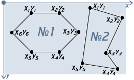
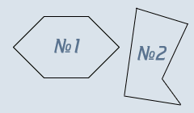

Учебник по Html для чайников. Простейшие.Ступенька 19-ая.Вот мы, наконец, добрались и до многоугольников.  Бу-бу-бу! :) Страшно? На самом деле тут нет ничего страшного. Вы указываете точки (координаты углов), они как бы соединяются между собой линиями, и мы можем таким образом получить очень разнообразные фигуры (посмотрите на фигуру 2, правда здорово?). Используя poly, мы можем делать самые разнообразные области, от скромного треугольника до шикарной звезды. Сейчас мы будем работать с фигурой №2, потому что у нее меньше углов (да, ленивая я, решила облегчить себе жизнь на один угол:). Для начала зададим тип области:
Координаты пишутся по следующему принципу: <area shape="poly" coords="x1,y1,x2,y2,...,xN,yN"> Расшифровывается это так: "координаты первого угла (x1,y1), координаты второго угла (x2,y2), еще много углов и их координат (...), координаты последнего угла (xN,yN)". Т.е. для нашего пятиугольника запись полностью будет выглядеть так: <area shape="poly" coords="x1,y1,x2,y2,x3,y3,x4,y4,x5,y5"> Теперь подставим реальные значения координат в наш код:
Дальше уже прописываем ссылку, имя карты, и привязываем карту к рисунку (это везде по одному и тому же принципу):
Теперь проверим, получилось ли у нас это безобразие (в этот раз вторая фигура, нажмите):
 Не забудьте прописать самостоятельно первую область (шестиугольник) - x1=54, y1=20, x2=109, y2=20, x3=147, y3=58, x4=109, y4=96, x5=54, y5=96, x6=16, y6=58. Теперь я расскажу еще о нескольких нюансах, и мы завершим наш разговор о картах: 1 - Мы можем одновременно использовать разные области, например круг и многоугольник:
2 - Наши области могут пересекаться (бывает, руки кривые). Это не смертельно, главное помнить, что в этом случае при нажатии на область пересечения приоритет имеет область, которая указана первой (т.е. посетитель пойдет на ту страницу, куда она ссылается).
3 - Будьте внимательны, если вы пропишите для картинки usemap=#KARTA, а имя (name) вашей карты будет karta - то возможны ошибки, т.к. karta и KARTA - разные имена. Регистр всегда учитывается, не забывайте. 4 - Вы можете не мучаться с картами, а найти на просторах интернета специальную программу, с помощью которой вы без труда сможете карту расчертить, и не прописывать все вручную - это может сэкономить ваше время, силы, нервы. Надеюсь, с картами вам теперь все ясно, и вы можете продолжать обучение :)
<<< Ступенька 18-ая: Назад | Далее: Ступенька 20-ая >>>
|
|||||||||||||||||||||